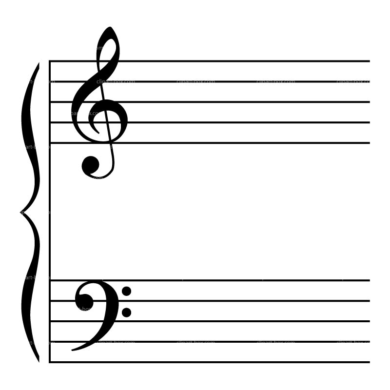

Welcome to Simple Music Theory
Become a better muscian by learning the basics first!

The image to the left shows what is called the music staff.
The symbol on the upper set of lines is called the treble clef.
The symbol below is called the bass clef.
These clefs tell us where the notes written on the staff are
compared to middle C. Middle C is the C in the middle of a piano keyboard. Notes above middle C are written on the upper portion of the staff with the treble clef, and the notes below middle C are written on the lower portion of the staff with the bass clef. Music notes
on the staff are written either on the lines or in the spaces; this helps us know which note is which.
The image on the right shows notes written on the staff.
In music, notes are named using the letters A through G.
As can be seen, once all the letters are used they repeat.
The distances between notes are referred to as intervals.
The distance between two notes of the same
name is known as an octave. Remember middle C? That is the C on the staff with the line through it. That line is called a ledger line.
We use ledger lines to help us keep track of notes not written on any of the five lines or spaces in the main staff.